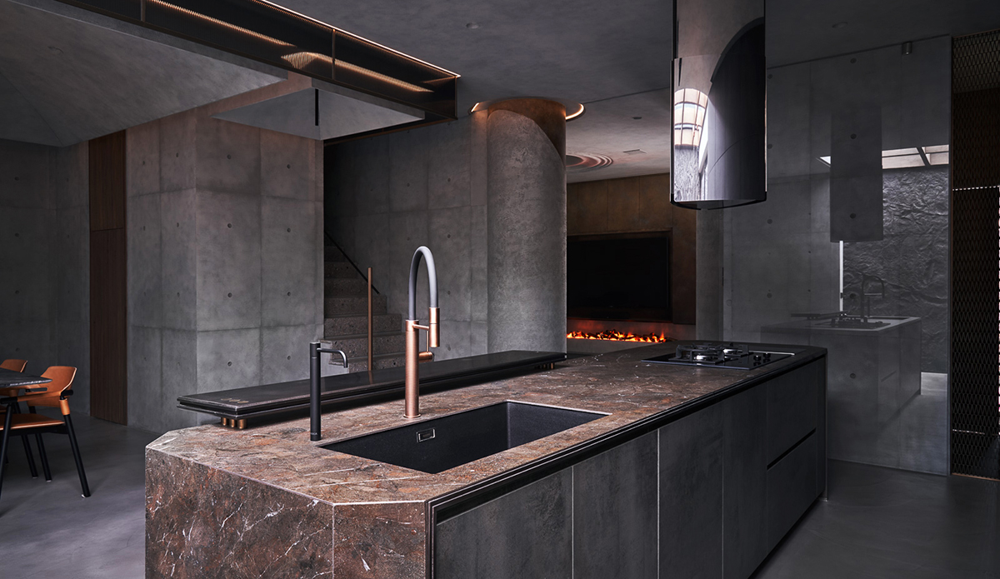
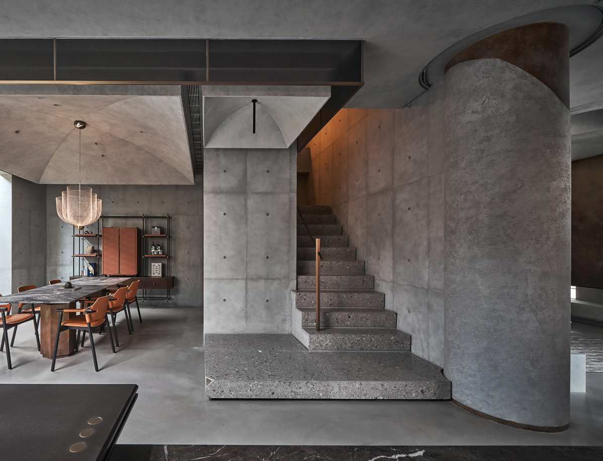
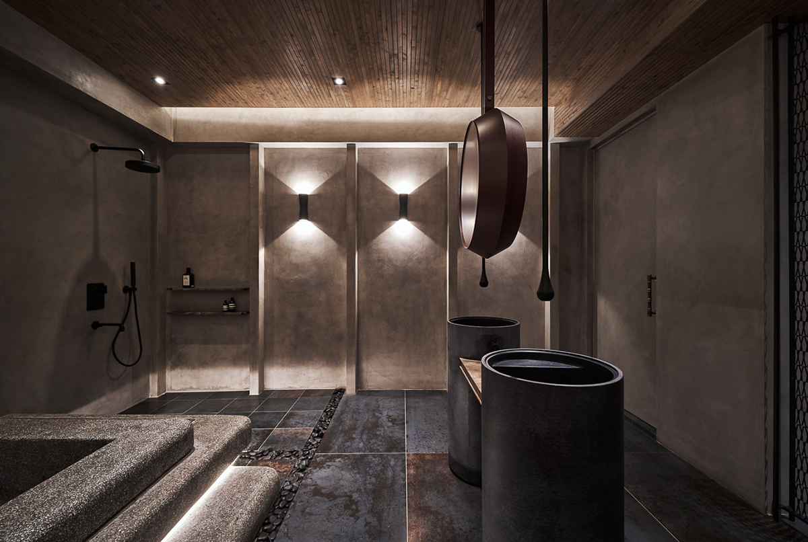

「專訪」探進傍山而生的灰泥洞窟，台南 80 坪中西混搭風透天宅

如同翻越地平軸線之下，感受喧囂耳語漸漸模糊消音，取而代之是一座無國界的平行洞窟，以自然沈穩況味包裹著中西元素，編寫東方的內斂含蓄，引介西方的古典奢雅，看似懷抱著各自鮮明主張，卻毫不張揚的捉住目光。
正如對風格包容力十足的屋主，一見傾心 執見設計 的多元創作能量，從之經手的 石牌古宅 案例中，尋覓到未來藍圖的無限可能，因此經由發散式的風格探究，從強烈的混搭元素中，擷取岩壁洞穴、穹頂圓柱做為本案設計介質。
經由表現語法的轉譯，以中性清水模伸展場域的一致包容力，運用意象的借喻手法，移植熔岩圓柱、漣漪井洞，雕塑帶有異國色彩的洞窟景況，並以鏽蝕、作舊質材捕捉時間往前推進的古樸痕跡，讓光影催化不拘一格的家顏。
Q：請跟我們聊聊本案的設計主軸？
深知屋主對混搭風格的寬容度，我們依序從喜好萃取中西元素，以中性清水模原始材料做為本體，融匯古典教堂式穹頂、圓柱，以及天然岩壁與洞窟等場景概念。
經由簡化繁瑣線條、解構設計語言，結合居家空間的理性機能，將元素以感性樣態接續投放在客餐廳，來隱喻盈滿自然魄力的場域，私領域交予古樸土牆、鏽蝕與原木肌理，表述時間旅程留存的光陰鑿痕，並搭襯有著溫潤本色的家具，提增休憩畫面的柔和暖度。
Q：經手過程有遇到哪些困難或印象深刻的事，如何化解？
有別過往工整的浴缸呈現，此次錯落懸空的水磨石浴缸，遇到不少技術上的執行困難，經由與師傅數次的技術調整，透過精細塑形與修飾，得以將埋藏間照燈管安好呈現，成就浴缸的完好樣態。
個案基本資料
台南 / 屋齡 10 年 / 透天厝 / 室內 80 坪（共三層）/ 格局 2 房 2 廳 1.5 衛 / 居住人數 2 大
< 需求 >
1. 弱化收納機能存在感，將功能整合至空間邊界
2. 屋主對混搭風格極有包容力，以中西元素做為視覺主體
3. 明確指定需要藏酒展示架、品酒吧台
< 各別空間 >
1. 前庭設計：
旋身進入宅院，行經木格柵天花，一片後製清水模旋即以沈穩身姿躍進眼角，帶動那份安穩且靜謐的力度，為了強化居所隱蔽性，特意於立面鑿劃兩道晶透玻璃磚，牽引暖光悠緩流瀉之際，霧透質地也捕捉到內外曖昧的身影。
腳步輕踏著碎石子曲徑再次移轉，特意些微架高外玄關地坪，暗指居宅的美好開端就此揭曉，並順延著結構圓柱，以原始實木推展一座穿鞋椅凳，搭襯散發簡樸況味的實木條鞋櫃，一式到位完整替換鞋履流程。
2. 玄關設計：
步伐隨著仿板岩磁磚推進，團隊精心根據接觸頻率決定材質，揀選深淺交錯的木質肌理門片，搭襯古銅色鏽蝕感手把，讓光陰痕跡烙印下專屬印記。
敞開門的第一道清水模端景，特意敲除部分實體隔牆，攤展一道黃銅色編織鋼網，以幽邃景深指引歸家的方向，鄰側利用木質吊櫃有序歸放鑰匙、室內拖鞋等物件，透過一層一層的循序儀式，褪去耳邊的喧囂雜音，打開沈靜脈動的感官。
3. 客廳設計：
如同洞穴給予人安定的意象，綻放一縷沈靜氣度的公空間，延續後製清水模做為立面基底，並以無接縫盤多磨推展無斷點地坪，將灰度流暢地往縱橫四方拓展，渲染無邊際的視覺景深。
同時從對角軸線豎立起兩道特殊漆料圓柱，以隔而不斷的手法拉出客廳隱形邊界，透過柱身的厚薄度斷差、金屬漆料點襯，捏塑熔岩緩緩流動的姿態，加上映照間照的幽微光暈，層層疊加天然洞窟的安全包覆氛圍。
為了不使懸吊電視櫃硬生生切斷畫面連續性，電視主牆拋引一道圓弧淺台連接四方，同時也拓增兩側置放喇叭的深度，佐搭水霧化電子壁燈，讓冉冉而上的炙熱焰火具體化溫暖情境。
抬頭一望，以 CNC 雷射切割營造如同輕觸水波漣漪波紋，從天花上方輕盈化散，好似天井洞自然灑落的漫漫天光，而沙發揮別既定陳設型制，以灰泥質地構成具有儲放功能的基座，以拉起結構對齊的水平線，讓所有元素主從有序共存。
4. 廚房設計：
將內外尺度重新梳理分配，廚房末端改鋪展粗獷墨黑裸岩，藉由凹凸有致的岩脈石皮，盛映一片片如落曝般的柔絲日光，以捏塑傍山而生的大器張力景致。
好似順應自然而生的場域，承襲那份自然不造作況味，以斑駁刷紋系統板材量身客製一字型櫥櫃，透過折疊開闔方式，將冰箱廚電、熱炒內吧台、乾貨器皿全數收攬，拉平暢行的烹調動線之餘，也透過寬容彈性遮隱繁雜的日常痕跡。
循序往前，穩斂的大尺度中島橫列為迷人餐敘前景，為了契合乘坐高腳椅的人體工學，將島身以六段內凹曲弧依序延伸，形成雙腳能夠舒適伸展的基座。

同時導入內斂解構美學，島台前段採用銅釦＋銅柱予以層板足夠支撐力，透過 3 mm 的倒角收攏銳利視感，以剛柔對比點亮奢雅細節，而融匯岩紋、雲狀晶體的墨咖磁磚大板，也為檯面傾注一股奔放生息，讓夫妻倆能親密倚靠於此，品酌一杯咖啡，縈繞笑語聲閒話家常。
5. 餐應設計：
敲除不合時宜隔間後，餐廳跳轉為一幅裹藏中西美感的景畫，衡量餐廳存有壓迫的樑柱結構，以極簡語言解構了教堂式穹頂，透過向外發散的拋物線曲度，創造出大小交錯的灰泥穹頂，不著痕跡地將吊隱式空調消隱無蹤。
置中垂掛荷蘭 moooi Meshmatics Chandelier 金屬織網餐吊燈，藉由燈罩細緻層次產生如漣漪的光影流動，讓唯美光暈的輕快躍動，展開賓主盡歡的款待景況。
朝著指向性的石紋餐桌一望，顧及屋主有品酒雅興，精心植入酒品展示吧台概念，以線性鐵件經緯交錯延伸展架，串接磁磚薄板＋實木條層櫃堆疊混搭魅力，而中段則交予溫潤馬鞍皮構成門櫃，敞開後，金屬質地相伴橙黃光輝，映襯著一瓶瓶美酒珍藏，在此從容不迫斟酒，為微醺之夜醞釀一室華雅韻味。
6. 樓梯設計：
以水磨石延伸第一層踏階寬幅，不只齊平梯間分界輪廓，也無縫接軌垂直動線，讓行走儀式更加平順流暢，而拓寬平台也成為屋主佈置藝品、盆器的ㄧ隅，悄然投放自我性格主張。

7. 主臥 / 更衣間設計：
呼應自然的變幻萬千時序，寢臥全面漆刷灰泥特殊塗料，運用濃淡不一的筆觸圍塑原生氣息，鋪排清晰刷紋的超耐磨木地坪強化樸實感，相映天花逐層推進的原木作舊樑柱，以及蔓延而開的圓拱型體，圍塑時光細細鑿刻的古樸意象，予以睡寢畫面不張揚的層次變化。
為了迴避床壓樑風水顧慮，選用船型橙紅色皮革推展床架，透過木條細膩包裹基座厚度，與左右些微揚起的內彎曲度，營造安穩沈靜的包覆感。
同時根據屋主需求習性，臨窗處不只延伸閱讀書桌，且以鏽蝕感立櫃藏納電器設備，再加上實木＋鐵件構成的懸吊式椅榻，闢出一處安放心神的角落。
推開隱藏暗門，得知屋主可接受半開放式佈局，因此更衣間依循置放習慣，以墨黑系統板材有序分配通透展示、抽屜與開放低櫃等配置，中段佐搭黑玻璃展開一目瞭然的拾取視野，顧及男主人有著飾件收藏愛好，便以開放層架承接一字型中島，伸展而開獨具品味端景。
8. 衛浴設計：
重新拓展衛浴寬闊面積後，透過陣列式立柱牽引過道層序的儀式感，使偌大水平向度有著隱形秩序，並交織潑墨似的金屬地磚，與天花緊密包覆的實木格柵，隱隱揭示著新東方印象洗滌氣氛。
揮別僵固的佈局手法，四件式衛浴皆以不同樣態各據一方，從天而降的棗紅色圓鏡，搭配水滴狀的天頂龍頭，展開流暢的雙面盆規劃，更強化沈穩雅緻的中式梳洗情景。
遙望對向，經過多道工法雕塑的水磨石浴缸，在多層接面堆疊之下，促成一處寬大無虞的泡澡天地，加上 Catellani&Smith PostKrisi W 60 壁燈，透過光與形堆疊別緻光影，以強烈的感官力量，帶領身心靈獲得最紓解解放。

< 總體規劃 >
9. 收納規劃：
盡可能削弱大型量體存在，一樓末端以獨立儲藏間收放高爾夫球具、行李箱等物件，二樓則將收納全數集中更衣間，以及寢臥的設備立櫃，皆運用一致的質地表現，達到隱於無形效果，以保留空間簡潔俐落本質。
10. 燈光設計：
根據實際日常將照明劃分為三種層級，如 4000k 的全面性照明，以中性光奠定整理與工作模式的良好光源，並透過迴路分切促成 3000k 的夜間情境模式，再加上重點式藝術燈飾、LED 鋁條線燈等氛圍照明，堆疊耐人尋味的立體光氛。